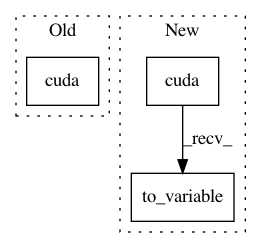

430beec651fe14e4f0f032cbc27e18a9ca415d90,examples/cora.py,,,#,11
Before Change
test_mask = torch.arange(n - 500, n, out=torch.LongTensor())
if torch.cuda.is_available():
input, adj, target = input.cuda(), adj.cuda(), target.cuda()
train_mask, test_mask = train_mask.cuda(), test_mask.cuda()
input, target = Variable(input), Variable(target)
After Change
path = os.path.dirname(os.path.realpath(__file__))
path = os.path.join(path, "..", "data", "Cora")
dataset = Cora(path, transform=TargetIndegreeAdj())
data = dataset[0].cuda().to_variable()
train_mask = torch.arange(0, data.num_nodes - 1000).long()
test_mask = torch.arange(data.num_nodes - 500, data.num_nodes).long()
In pattern: SUPERPATTERN
Frequency: 3
Non-data size: 3
Instances
Project Name: rusty1s/pytorch_geometric
Commit Name: 430beec651fe14e4f0f032cbc27e18a9ca415d90
Time: 2018-03-06
Author: matthias.fey@tu-dortmund.de
File Name: examples/cora.py
Class Name:
Method Name:
Project Name: rusty1s/pytorch_geometric
Commit Name: 9d8caeed25644bef47d5caa20ecada67c134a2cf
Time: 2018-03-06
Author: matthias.fey@tu-dortmund.de
File Name: examples/cora.py
Class Name:
Method Name:
Project Name: rusty1s/pytorch_geometric
Commit Name: 722414ddda2ee5512dbfbeba1c13a3f16ef954e6
Time: 2018-03-09
Author: matthias.fey@tu-dortmund.de
File Name: examples/cora.py
Class Name:
Method Name: